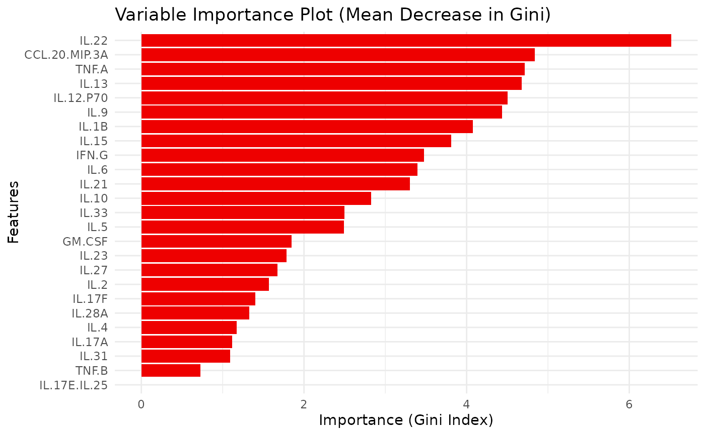
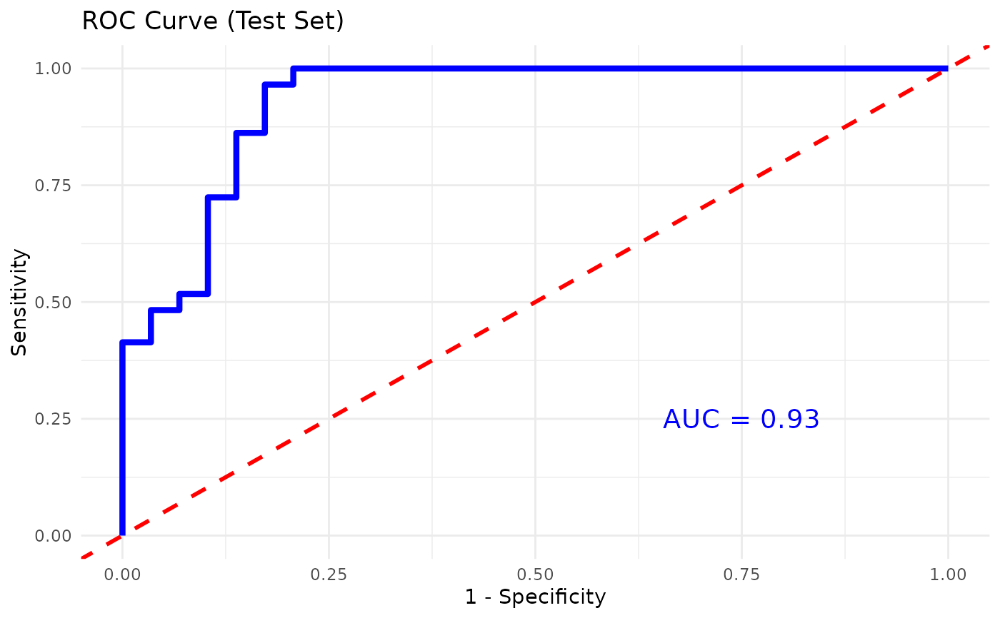
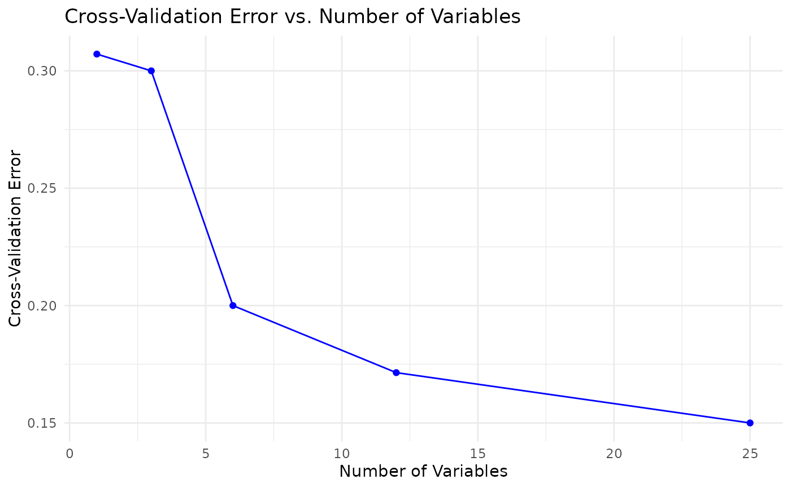

This function trains and evaluates a Random Forest classification model on cytokine data. It includes variable importance visualization, cross-validation for feature selection, and performance metrics such as accuracy, sensitivity, and specificity. For binary classification, the function can also plot the ROC curve and compute the AUC.
Usage
cyt_rf(
data,
group_col,
ntree = 500,
mtry = 5,
train_fraction = 0.7,
plot_roc = FALSE,
k_folds = 5,
step = 0.5,
run_rfcv = TRUE,
output_file = NULL,
progress = NULL
)Arguments
- data
A data frame containing the cytokine data, with one column as the grouping variable (target variable) and the rest as numerical features.
- group_col
A string representing the name of the column with the grouping variable.
- ntree
An integer specifying the number of trees to grow in the forest (default is 500).
- mtry
An integer specifying the number of variables randomly selected at each split (default is 5).
- train_fraction
A numeric value between 0 and 1 representing the proportion of data to use for training (default is 0.7).
- plot_roc
A logical value indicating whether to plot the ROC curve and compute the AUC for binary classification (default is FALSE).
- k_folds
An integer specifying the number of folds for cross-validation (default is 5).
- step
A numeric value specifying the fraction of variables to remove at each step during cross-validation for feature selection (default is 0.5).
- run_rfcv
A logical value indicating whether to run Random Forest cross-validation for feature selection (default is TRUE).
- output_file
Optional. A file path to save the outputs (plots and summaries) as a PDF file. If NULL (default), the function returns a list of objects for interactive display.
Value
A list containing:
model: the trained Random Forest model,train_confusion: confusion matrix from the training set,accuracy_train: overall training set accuracy,test_confusion: confusion matrix from the test set,accuracy_test: overall test set accuracy,vip_plot: a ggplot object of variable importance,importance_data: a data frame with variable importance metrics,roc_plot: (if applicable) a ggplot object of the ROC curve,rfcv_result: (if run_rfcv is TRUE) cross-validation results,rfcv_data: (if run_rfcv is TRUE) a data frame of RF CV results,rfcv_plot: (if run_rfcv is TRUE) a ggplot object of RF CV error vs. number of variables.
If output_file is provided, a PDF is generated and the function returns NULL invisibly.
Examples
data.df0 <- ExampleData1
data.df <- data.frame(data.df0[, 1:3], log2(data.df0[, -c(1:3)]))
data.df <- data.df[, -c(2:3)]
data.df <- dplyr::filter(data.df, Group != "ND")
cyt_rf(data = data.df, group_col = "Group", k_folds = 5, ntree = 1000,
mtry = 4, run_rfcv = TRUE, plot_roc = TRUE)
#> Setting levels: control = PreT2D, case = T2D
#> Setting direction: controls < cases
#> $summary_text
#> [1] "### RANDOM FOREST RESULTS ###\n\n--- Training Set ---\nConfusion Matrix:\n Reference\nPrediction PreT2D T2D\n PreT2D 70 0\n T2D 0 70\n\nAccuracy: 1 \n\nSensitivity (train): 1 \nSpecificity (train): 1 \n\n--- Test Set ---\nConfusion Matrix:\n Reference\nPrediction PreT2D T2D\n PreT2D 25 7\n T2D 4 22\n\nAccuracy: 0.81 \n\nAUC: 0.93 \n\nSensitivity (test): 0.862 \nSpecificity (test): 0.759 "
#>
#> $vip_plot

#>
#> $roc_plot

#>
#> $rfcv_plot

#>